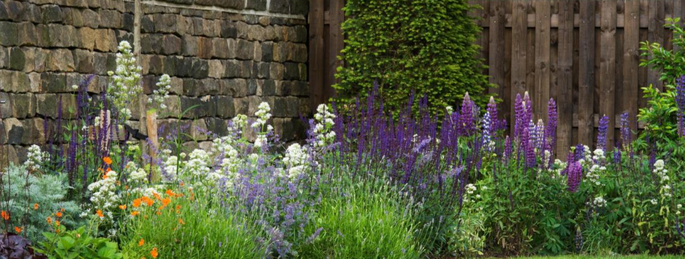

FLOWER GARDENS
Your flower garden can be as small as a window box or a container on a patio. It could be a raised garden bed or a brand new flower bed. Flower gardening can become a much-loved passion, but it can also be overwhelming, especially when you're first starting out. There are millions of plants to choose from and even more ways to combine them, and inexperienced gardeners may not know where to start.
Your best bet is to start small your first year, and don't worry about making mistakes. As time goes on, you can adjust your garden, digging up what didn't work on year and embracing what did well. You'll find a garden style and plants that make you happy, and the discovery of what exactly that is can be an unexpected pleasure.
There are many benefits of growing flowers at home. For example, they can:
- Be great companion plants
- Improve pollination and harvests
- Help manage weeds
- Provide pest and disease management
- Possess medicinal and health benefits
- Add colour and beauty to the garden!
Seasonal Flowers Selection
Below are Getrude's selection of flowers from each season, including her favourite year-round species!